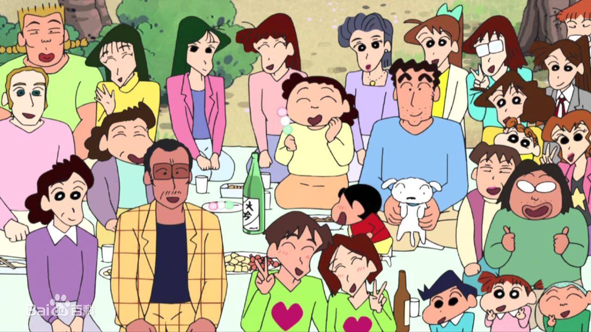
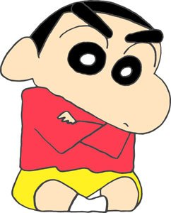
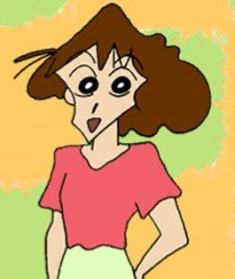
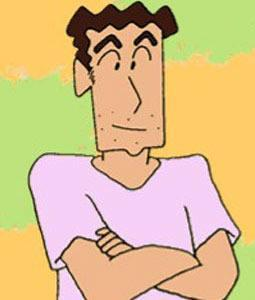
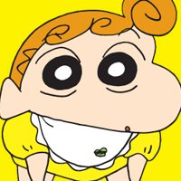
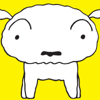

《蜡笔小新》是由日本漫画家臼井仪人创作的漫画。1990年8月，在《weekly漫画action》上开始连载。1992年，根据漫画改编的同名动画在朝日电视台播出。2010年7月16日，臼井仪人遗作《蜡笔小新》第50卷出版。在作者臼井仪人去世后，作品由“臼井仪人&UY工作室”沿袭原作风格继续创作。 
臼井仪人先生说之所以会创造出小新这个形象，是因为他在观察自己的孩子的时候，发现小孩子的想法往往非常独特，以至于作者被小孩的世界所吸引。所有的小孩都有乖巧和调皮的两面性。这种两面性对作者来讲是十分有趣的。反过来作者正是在自己的作品中反映了这一两面性。他同时承认“小新”有一部分是他自己的翻版。据他透露，蜡笔小新里有许多内容是他现实生活的写照，例如：小新爸爸造型与他本人有些相似；小新和他爸爸两道浓眉毛乃是因作者自己嫌弃自己的眉毛太稀疏。
小新是一个年仅5岁，正在幼儿园上学的小男孩。他内心早熟，喜欢欣赏并向美女搭讪。最初小新与父亲广志和母亲美伢组成一个三人家族。随后又添加了流浪狗小白，日子频繁琐碎却不乏温馨感动。随着故事展开，又加入了新的成员妹妹野原向日葵
|  | 野原新之助 5岁，美伢、广志之子，小葵之兄。 住在春日部郊区某住宅区一栋二层小平房。B型。喜欢漂亮的姐姐和辣妹。性格是我行我素。擅长的技能是“屁股外星人”“大象”。 |
|---|---|
|  |
野原美伢
年龄：29岁。熊本出身。 家庭主妇（职业）广志之妻，小新、小葵之母。 好面子，不认输，善良。脾气暴躁（对帅哥很温柔），做得一团糟、犯错有时死不承认，弱点是受不了别人的甜言蜜语。 |
|  |
野原广志
年龄：35岁。秋田出身。 脚有异常的气味。每天，公司里忙于工作，在家里新之助和美伢怎么任意驱使，稍微疲劳方式。但是是家里的顶梁柱。 |
|  |
野原向日葵
主人公野原新之助的妹妹。 刘海有三个圈儿。哥哥喜欢向美女搭讪，而她和妈妈一样，喜欢帅哥和亮晶晶的东西。未满一岁。 |
|  | 野原小白
被抛弃的弃狗，后来被小新捡回家。 从垃圾堆捡来的一只狗。 |